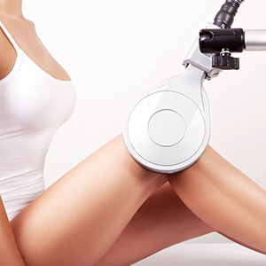
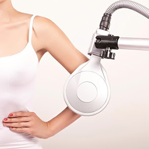
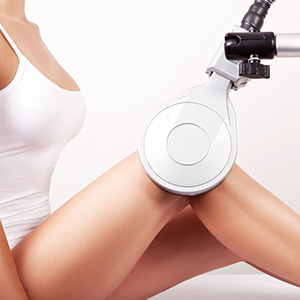
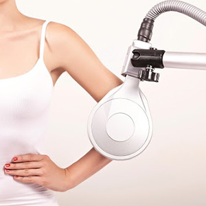

Zabiegi rehabilitacyjne Salus-Talent PRO
SALUS-TALENT PRO to absolutna nowość wśród nieinwazyjnych metod zapobiegania i leczenia nietrzymania moczu (NTM). Jedyne urządzenie na rynku działające z intensywnością pola elektromagnetycznego rzędu 3 tesli.
- Unikalna innowacyjna technologia
- Komfortowa i bezinwazyjna terapia
- Precyzyjnie opracowane parametry – wysoka skuteczność terapii
Zasada Działania:
Jest to pierwsze na rynku urządzenie magnetoterapeutyczne, za pomocą którego można uzyskać subiektywnie odczuwalną intensywność podczas stosowania, a także indukcję magnetyczną rzędu 3 tesli przy częstotliwości do 100 Hz. Wysoko indukcyjny, głęboko penetrujący, pulsacyjny stymulator elektromagnetyczny SALUS-TALENT pozwala na miejscowe przyłożenie precyzyjnego pola elektromagnetycznego przenikającego warstwy odzieży, tkanek oraz kości, stymulując ściśle wyznaczony obszar w głębi ciała. Ludzkie ciało stanowi dobry przewodnik dla pola magnetycznego. W momencie przyłożenia wysokoenergetycznego pulsacyjnego pola magnetycznego, tkanki organizmu są stymulowane w miarę penetracji tego pola w głąb organizmu. Pobudza to w następstwie komórki nerwowe, mięśnie oraz naczynia krwionośne. W przeciwieństwie do stymulacji elektrycznej działającej jedynie na powierzchni, stymulacja wywołana silnym polem magnetycznym przenika głęboko do wnętrza organizmu, pobudzając tkanki. Głębokość penetracji sięga do 10 cm. Zabieg jest bezbolesny i komfortowy. Nie wymaga nawet zdejmowania ubrania. Pacjent siedzi wygodnie na fotelu, podczas gdy impulsy elektromagnetyczne penetrują oraz stymulują obszar dna miednicy. Pobudzają w ten sposób tworzenie się nowych białek oraz wzrost włókien kurczliwych
Oddziałuje na:
- Układ nerwowy
- Układ krwionośny
- Mięśnie
- Stymuluje głęboko położone nerwy obwodowe
- Pobudza mięśnie i usprawnia krążenie
- TERAPIA SCHORZEŃ UROGINEKOLOGICZNYCH
Wskazania:
- Schorzenia kręgosłupa
- Ostry/przewlekły ból odc. C, Th, L-S (lumbago)
- Rwa kulszowa (ischialgia)
- Spondyloza (zmiany zwyrodnieniowe kręgów)
- Zaburzenia w obrębie układu mięśniowo-szkieletowego
- Bark zamrożony (ograniczenie ruchomości wskutek zmian zapalnych lub zwyrodnieniowych)
- Zwyrodnienia stawów
- Reumatoidalne zapalenie stawów
- Osłabienie / zanik mięśni
- Zaburzenia układu moczowo-płciowego
- Nietrzymanie moczu
- Ból prostaty
Terapia z SALUS-TALENT PRO
- cewkę przykładamy bezpośrednio do ciała
- najsilniejsze działanie pola w centralnej części cewki
- 6-8 zabiegów (do 10)
- 10-15min; zabiegi uroginekologczne 20-30 min


 


